"How might we design interactive typeface?"
People communicate digitally in the digital age. People make avatars to express individuality or use emoticons to express their emotions.
However, it doesn't show all the different characteristics that humans have. People have unique voices, facial expressions, gestures, gait, and handwriting.
However, the letters transmitted through the Internet all use the same font without any individuality.
Why can't people have their own fonts, just as they have their own voices or handwriting?
The biggest reason is that the font design takes a lot of time and effort, and people have to design all the letters in the same design.
To reduce this process and connect the font directly to the individual, conduct an experiment that connects the font with one of the characteristics of the individual.
Transfont's fonts design through the movements of individuals.
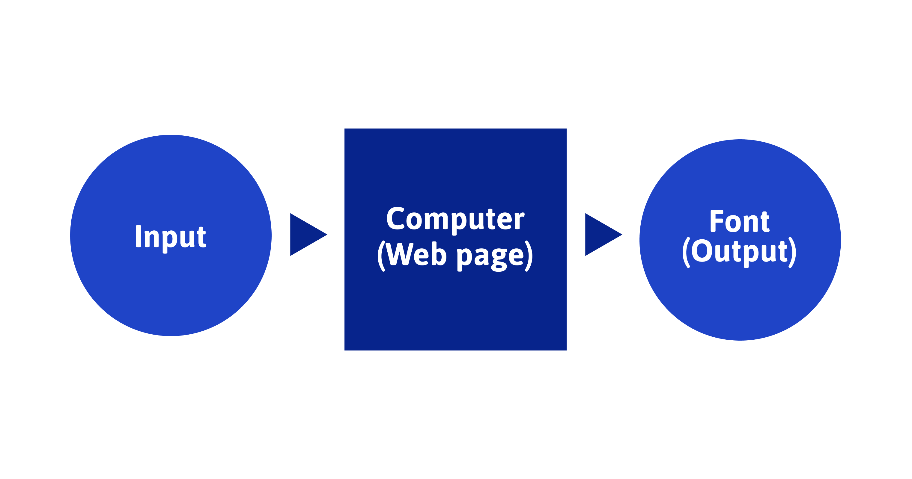
Research
Alphabet Elements
Design the alphabet characters and break them into various elements.
Blue means horizontal, red means vertical, Green and yellow mean diagonal, and sky-blue means arc.
Each element is made into a variable and controlled by interaction.
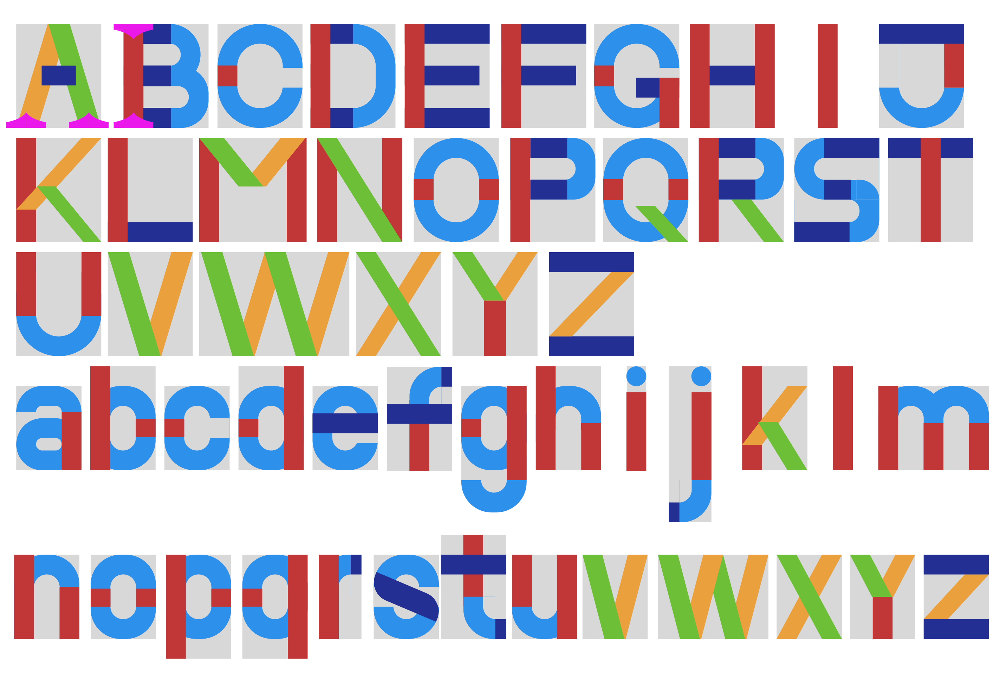
Interaction Research
The people's movements to transform the fonts. The position and spacing of each joint indicate a transform in the font.
Font design changes between the pose and the pose.
The gap between the elbows controls the width of the font, and the gap between the feet controls the weight of the font.
The angle of the arm controls the curvature of the arc, the height of the shoulder adjusts the height of the middle of the font,
and the height of the wrist adjusts the weight of the font horizontal line.
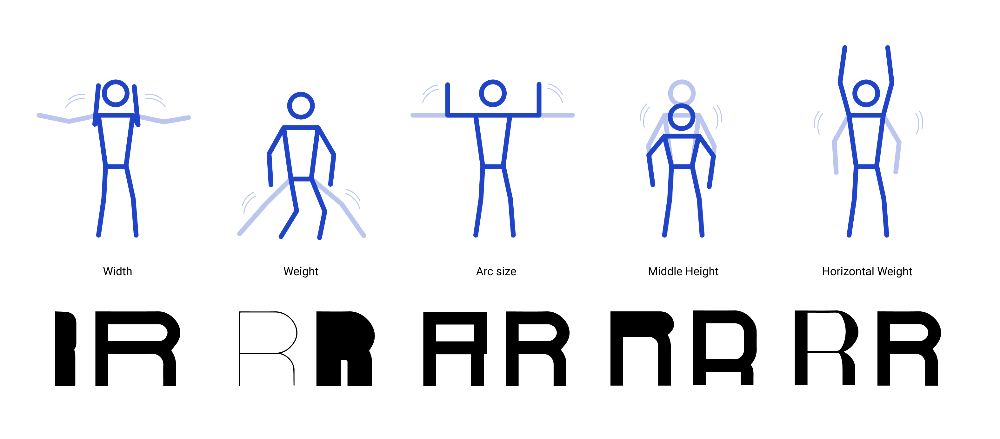
UX Research
User Flow
Users need a camera and microphone to make a font that is controlled by motion.
The camera captures and scans the body, which the user moves away from the device.
To controls other elements of the device, users will command with their voice.
It works in four different ways, depending on the state of the users’ device or environment.
If users don’t have a camera, users control the font directly.
When the users are away to design the font with the body, use the microphone to control the example words.
If users don’t have a microphone, use the keyboard to type words.
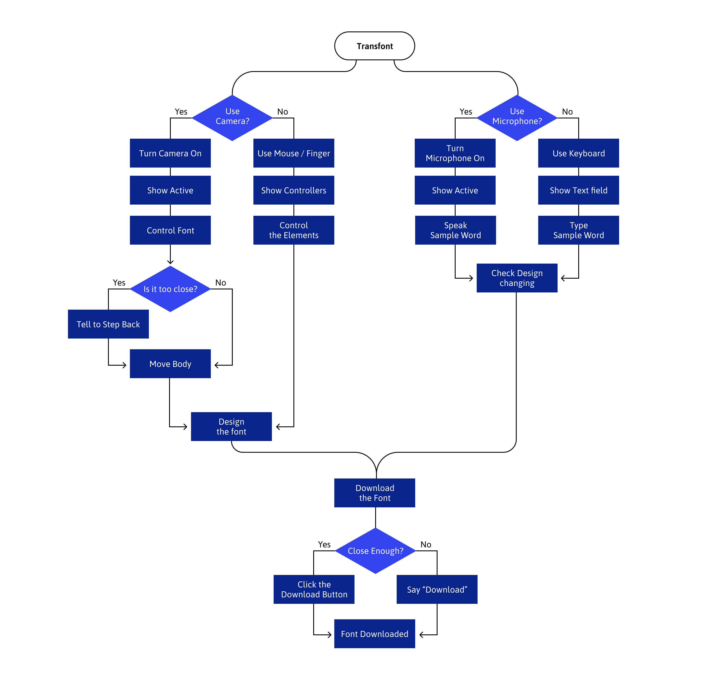
Key Functions
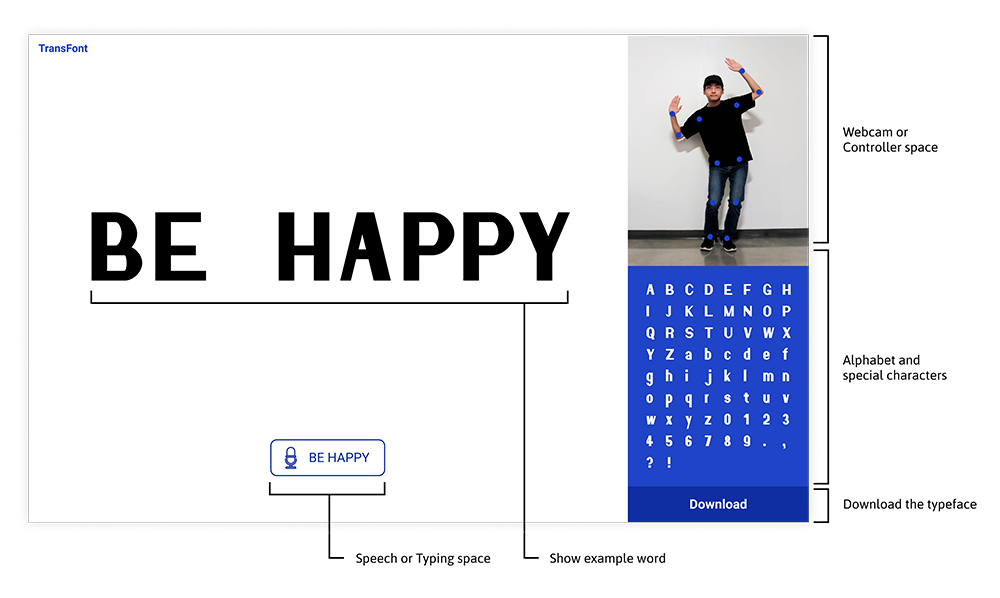
How to Use
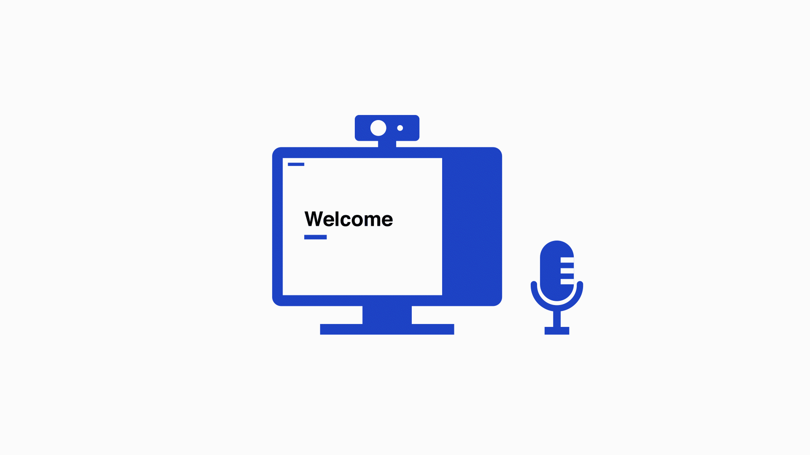
1. Prepare a web camera and microphone.
2. Allow browsers to use web camera and microphone.
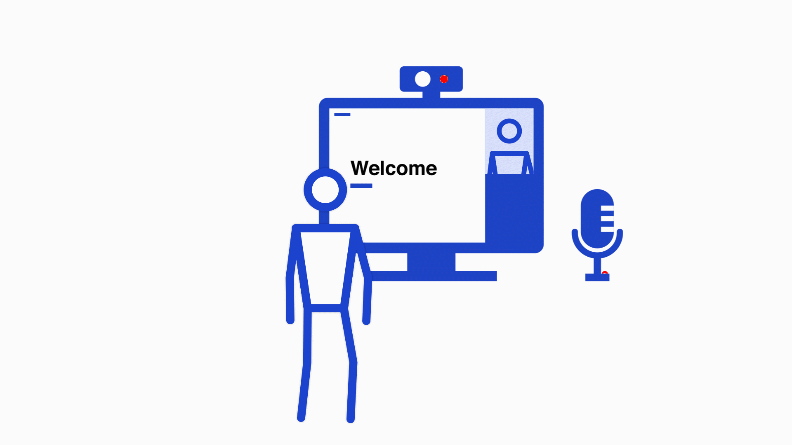
3. Step back until see your whole body.
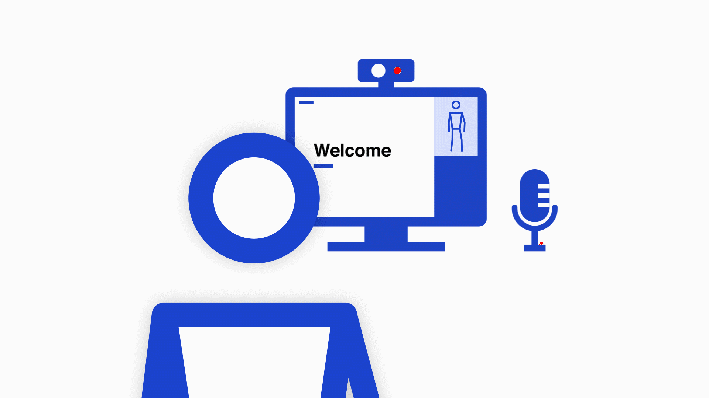
4. Speak on microphone to see an example text.
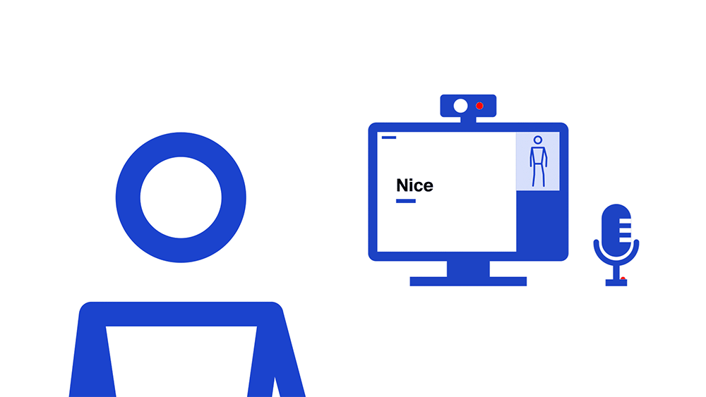
5. Move your body and design the font.
6. Use keywords for additional controls.
How it Works
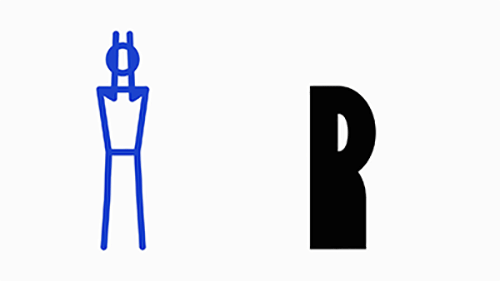
Width
The distance between the elbows.
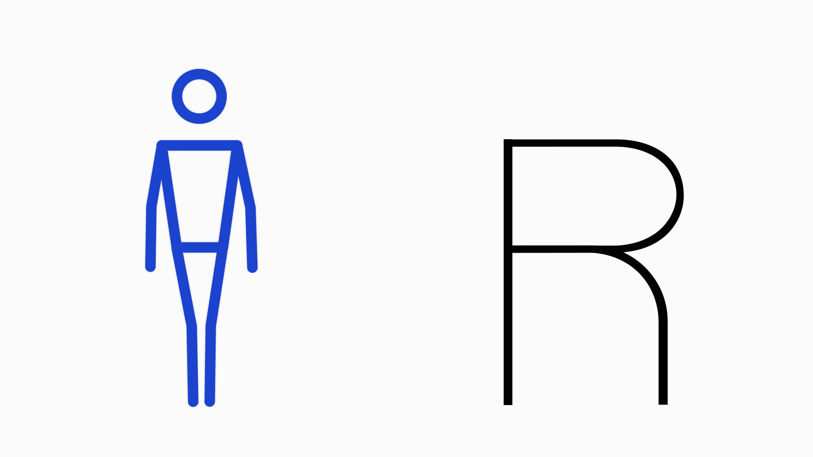
Weight
The distance between feet.
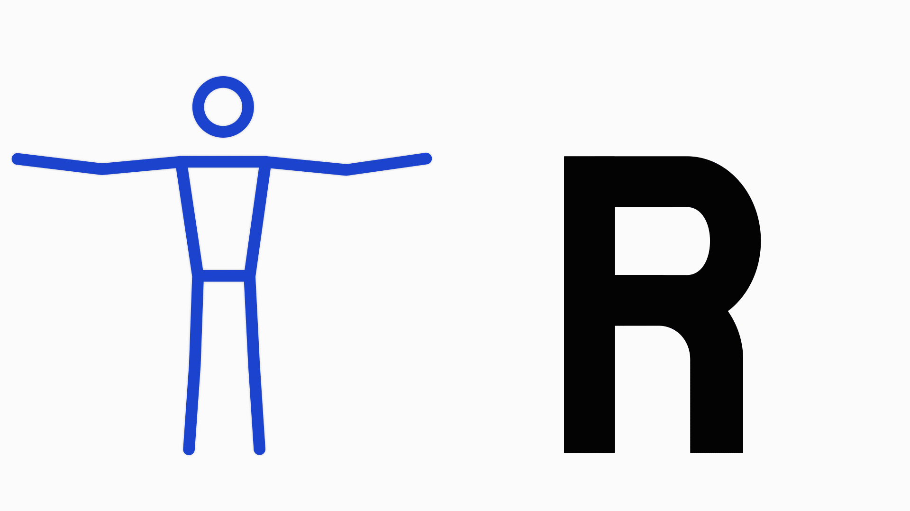
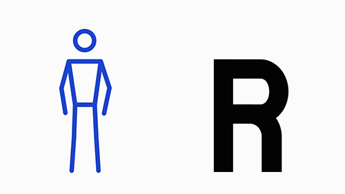
Middle Height
The height of the shoulder.
Horizontal Weight
The height of the hand.
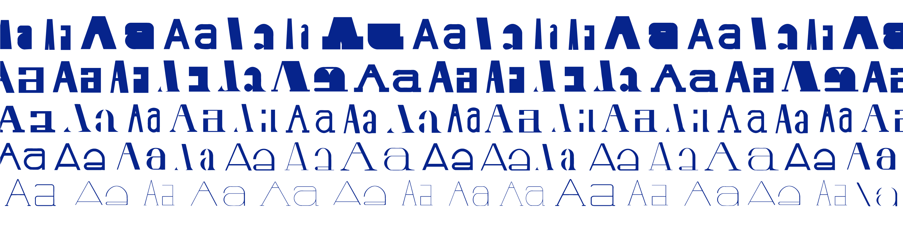
Resolution
Transfont is a web-based project that easily accessible through the Internet.
Various elements transform into user-specific combinations,
allow them to create their unique fonts. The font design by the user can be download as an OTF format.
Users can install this file and use the font.

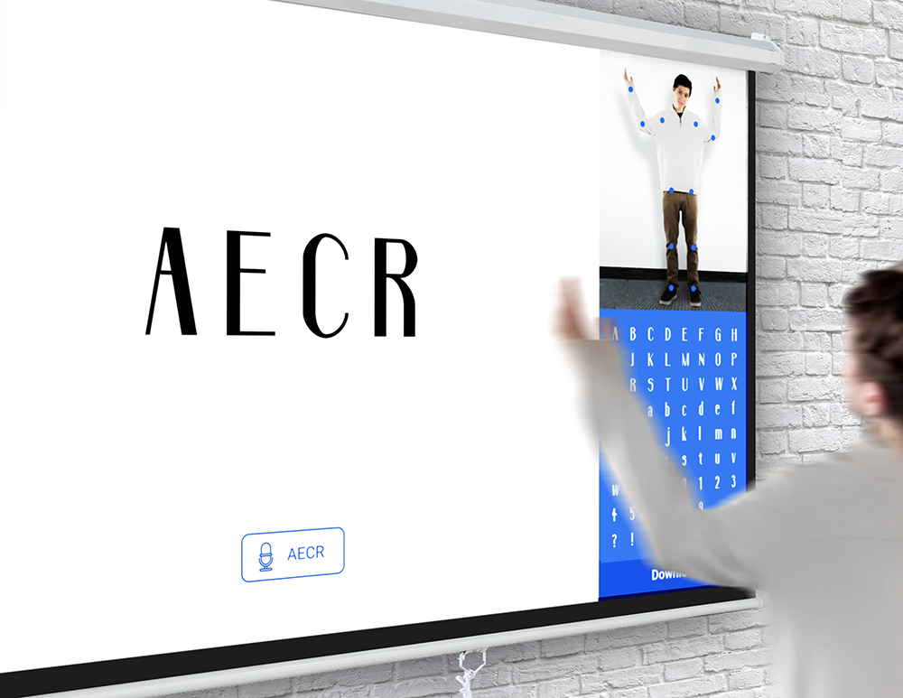